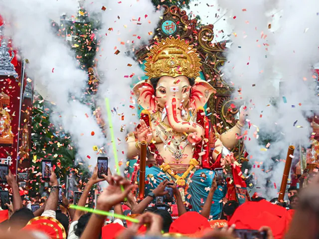
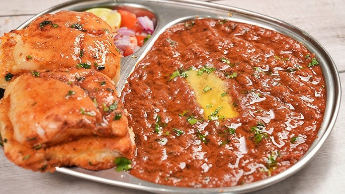
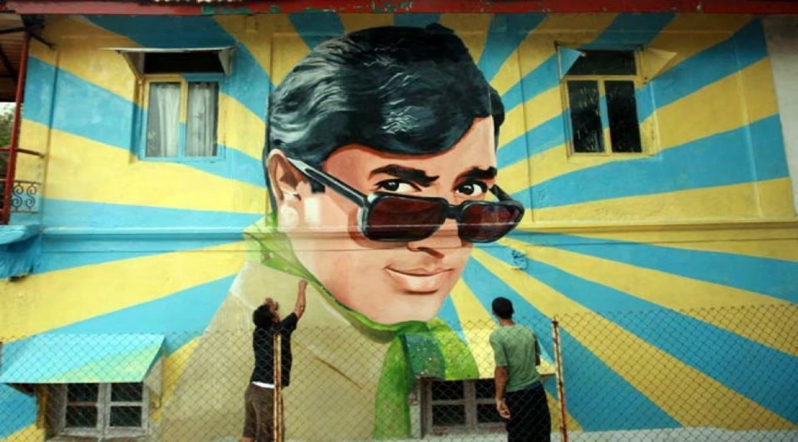
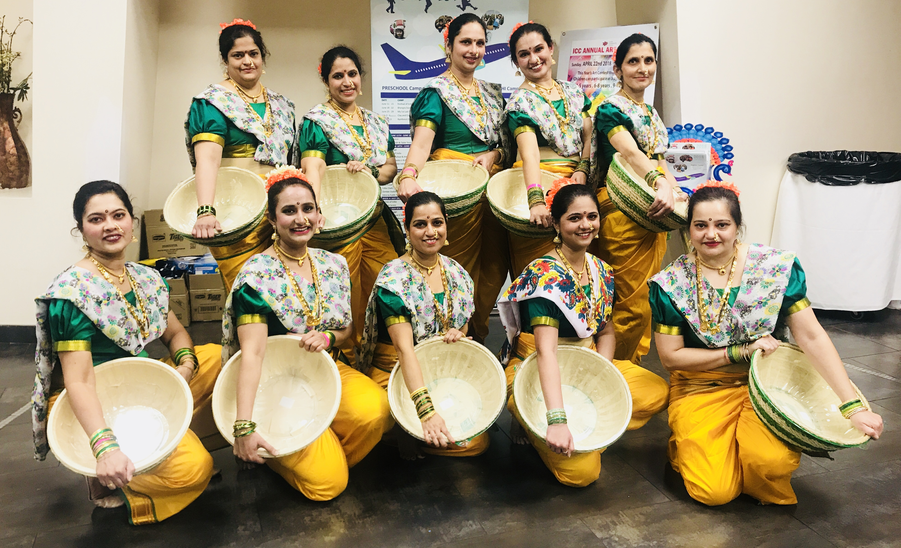

Maharashtra
Financial Capital, Bollywood, and Coastal Magic
A vibrant state where historic forts, rich cultural heritage, bustling cities, and the scenic Western Ghats come together alongside a stunning Arabian Sea coastline to create one of India’s most diverse and dynamic regions.
Maharashtra's Economic Powerhouse
Mumbai, formerly known as Bombay, is the capital of Maharashtra and the financial, commercial, and entertainment capital of India. It sits on the Konkan coast and is renowned as the 'City that Never Sleeps'.
Mumbai Overview
Geography
- Mumbai was originally an archipelago of seven islands.
- It is located on the western coast of India by the Arabian Sea.
- Features a natural deep-water harbor.
Climate
- The climate is tropical, wet, and dry.
- Experiences heavy rainfall during the southwest monsoon (June to September).
- Summers are hot and humid, while winters are mild.
Economy
- Houses India's most important financial institutions like RBI, BSE, and NSE.
- Headquarters for many top Indian conglomerates and multinational corporations.
- The heart of the Hindi film and television industry, popularly known as Bollywood.
Languages
- Marathi is the official and most widely spoken regional language.
- Hindi, English, and Gujarati are also extensively used.
- A unique local dialect known as "Bambaiya Hindi" is popular on the streets.
Infrastructure & Transit
- The Mumbai Suburban Railway (local trains) is the lifeline of the city.
- Features modern marvels like the Bandra-Worli Sea Link and a growing Metro network.
- Chhatrapati Shivaji Maharaj International Airport is one of the busiest in the country.

"Maharashtra is not just a state, it's an emotion. It is a place where millions come with nothing but dreams in their eyes and hope in their hearts."
Famous Landmarks
Culture of Maharashtra
Festivals
Maharashtra's festival calendar is vibrant and secular, celebrating the traditions of its diverse population with unmatched energy.
- Ganesh Chaturthi: The biggest festival in Mumbai. Enormous clay idols of Lord Ganesha are installed and worshipped, followed by grand immersion processions (Visarjan) at the beaches.
- Gudi Padwa: The traditional Maharashtrian New Year, celebrated with colorful rangolis, hoisting of the Gudi, and cultural rallies.
- Diwali & Eid: Celebrated with great enthusiasm, illuminating the city from local chawls to high-rises.
- Kala Ghoda Arts Festival: An annual exhibition spanning nine days, transforming South Mumbai into a hub of art, theatre, and culture.

Street Food & Cuisine
Maharashtra's food scene is a melting pot of cultures, famous worldwide for its fast, flavorful, and incredibly diverse street food.
Iconic Street Food
- Vada Pav: The quintessential Mumbai burger—spicy potato dumpling in a bread bun.
- Pav Bhaji: A spicy vegetable mash served with butter-soaked bread, originating from the city's textile mill workers.
- Bombay Sandwich: A multi-layered sandwich packed with veggies and green chutney.
- Bhel Puri & Sev Puri: Tangy, crunchy chaat snacks best enjoyed at beaches like Juhu or Girgaon Chowpatty.
Regional Delicacies
- Traditional Maharashtrian thalis, coastal Malvani seafood, and Parsi cafes serving Bun Maska and Irani Chai.

Entertainment & Cinema
As the birthplace of Indian cinema, Mumbai is driven by art, theatre, and the massive Hindi film industry.
- Bollywood: The Hindi film industry produces hundreds of films annually, deeply influencing the city's pop culture, fashion, and lifestyle.
- Marathi Theatre: A strong, historic tradition of regional theatre with dedicated venues like Shivaji Mandir.
- Street Art: Neighborhoods like Bandra are famous for vibrant murals depicting everything from Bollywood stars to social issues.

Music and Dance
The city's soundscape is a mix of traditional folk, classical traditions, and modern pop/Bollywood music.
- Koli Dance: The traditional dance of the Kolis (fisherfolk), the original inhabitants of Mumbai, known for its rhythmic, wave-like movements.
- Lavani: A traditional Maharashtrian song and dance performance known for its powerful rhythm and expressive beats.
- Contemporary Scene: A thriving underground hip-hop scene (Gully Rap) and a huge classical music following at venues like the NCPA.

Experience the Spirit of Maharashtra
From the heritage precincts of Fort to the glamorous suburbs of Bandra, Mumbai offers a high-octane blend of history, ambition, and community.
Historical Timeline
The islands of Bombay were ceded to the Portuguese Empire by the Sultan of Gujarat.
Portuguese Control
- The Portuguese established forts and churches, naming the area "Bom Bahia" (Good Bay).
- They constructed several notable structures, some remnants of which still exist in areas like Bandra and Vasai.
Bombay was given to the English King Charles II as part of the dowry for Catherine of Braganza.
The British Era & East India Company
- The British leased the islands to the East India Company.
- The Hornby Vellard project in the 18th century merged the seven separate islands into a single landmass.
- Bombay grew into a major seaport and trading hub.
India's first passenger railway line opened, connecting Bori Bunder in Bombay to Thane.
Industrialization & Rail Network
- The introduction of railways spurred massive industrial growth.
- Cotton mills proliferated, drawing migrants from across India and establishing Bombay's cosmopolitan character.
The city's name was officially changed from Bombay to Mumbai.
Modern Metropolis
- The name "Mumbai" is derived from the patron goddess Mumbadevi.
- Today, it stands as India's financial hub, boasting major infrastructural projects and the prolific Bollywood industry.